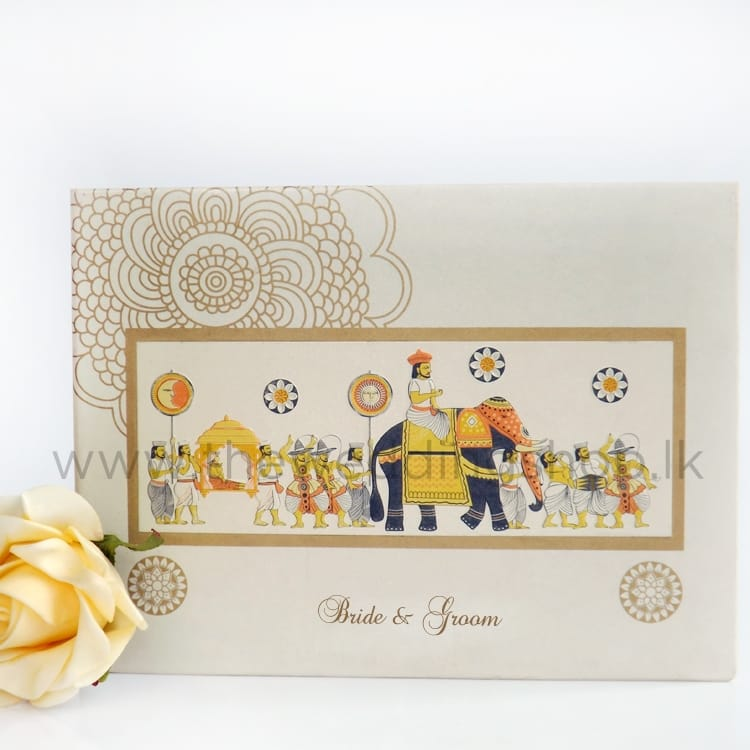
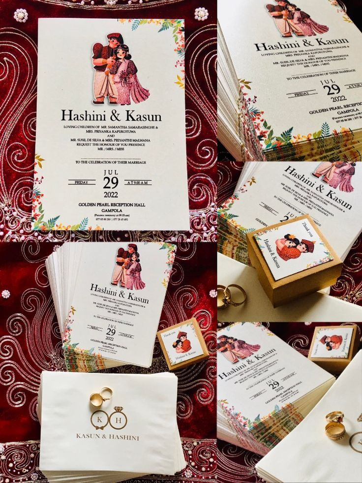

Wedding Planning
Introducing our Sri Lankan wedding invitation cards, exquisitely crafted to capture the essence of tradition and elegance. Each card is a masterpiece, blending intricate designs with vibrant colors, symbolizing the richness of Sri Lankan culture and heritage. Our collection features a variety of styles, from classic to contemporary, ensuring there's a perfect match for every couple's unique taste.
Our cards are meticulously designed with attention to detail, incorporating traditional motifs such as peacocks, lotus flowers, and intricate lace patterns, reflecting the timeless beauty of Sri Lankan artistry. The use of high-quality materials ensures durability and a luxurious feel, making each invitation a cherished keepsake for years to come. With customizable options available, couples can personalize their invitations to reflect their personalities and wedding theme, adding a touch of uniqueness to their special day.Whether it's a grand celebration or an intimate affair, our invitation cards set the tone for an unforgettable wedding experience.
Partner with us and let our Sri Lankan wedding invitation cards elevate your brand, offering couples a symbol of tradition, sophistication, and everlasting love. Experience the magic of Sri Lankan weddings with our exquisite invitation cards.
Capture the timeless elegance of Kandian tradition with our exquisite invitation cards. Infused with vibrant colors, intricate motifs, and intricate details, our designs pay homage to the rich heritage of Sri Lanka's Kandian culture. Each card is meticulously crafted to reflect the grandeur of traditional ceremonies, making them perfect for weddings, cultural events, and celebrations. Embrace the beauty of tradition and make a statement with our Kandian-inspired invitation cards that evoke the spirit of nobility and grace.
Wedding invitations can be customized according to your dress, decorations, second bridesmaids' dress colors and using traditional symbols like watchtowers, lions etc.
Immerse your guests in the timeless elegance of Western romance with our exquisite invitation cards. Crafted with meticulous attention to detail, our designs capture the essence of classic Western wedding themes. From rustic charm to refined sophistication, each invitation sets the perfect tone for your special day. Let us help you invite your loved ones to celebrate in style and create cherished memories that last a lifetime.


Experience the timeless elegance of Indian wedding traditions with our exquisite invitation cards tailored to match every aspect of your themed celebration. From vibrant colors to intricate designs, our collection captures the essence of Indian culture, ensuring your invitations set the perfect tone for your special day. Whether you seek classic motifs or contemporary flair, our expertly crafted cards offer a blend of tradition and innovation to reflect the uniqueness of your love story. Elevate your wedding experience with invitations that embody the richness and splendor of Indian heritage."